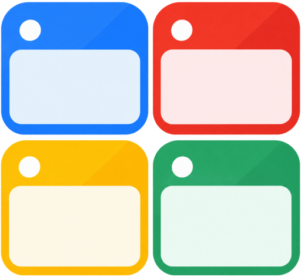

Pinned
No open tabs match your search.
Recently closed
Restore tabs and windows from Chrome’s available session history.

Incognito · Private tabs stay in this window mode. Previews, history, and undo records are not stored.
No open tabs match your search.
Restore tabs and windows from Chrome’s available session history.